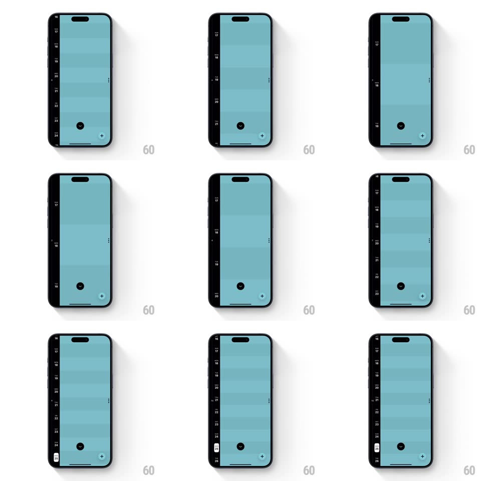

Media
Frame-by-frame

Rebuild this interaction 1:1: Timepage's pinch-to-resize calendar - a vertical pinch smoothly stretches or compresses the day rows of the teal timeline, changing how many days fit on screen.

Rebuild this interaction 1:1: Timepage's pinch-to-resize calendar - a vertical pinch smoothly stretches or compresses the day rows of the teal timeline, changing how many days fit on screen. ## Integration Integration: stack-agnostic spec - springs given as stiffness/damping, timed motions as duration + curve; map every value to your framework and animation library of choice. ## Scene A teal day timeline: date numbers (16-24) on a dark left rail, each row a horizontal band of slightly varying teal, a down-chevron button and a floating "+" button. ## Motion spec Pattern: gesture-driven row resizing. - Pinch out: every visible row grows uniformly (row height 44 -> 96pt) directly with the gesture (1:1), pushing rows below off screen; row separators stay sharp and the date rail stays pinned. - Pinch in: rows compress back toward 44pt, pulling more days into view; new rows entering from the bottom fade in (150ms) once half visible. - Release: row height springs to the nearest of three density stops (compact 44, default 64, expanded 96; spring ~300/24, 250ms) and the rail dates re-anchor to their rows. - Bands keep their per-day teal variation at every height. ## Calibration - The resize is uniform across rows - no per-row staggering. - The gesture tracks 1:1; only the release is animated. ## Reduced motion Keep 1:1 tracking; remove the entering-row fade. ## Don't miss - Three discrete density stops on release, not free-form heights. - The left rail never scrolls independently of its rows.